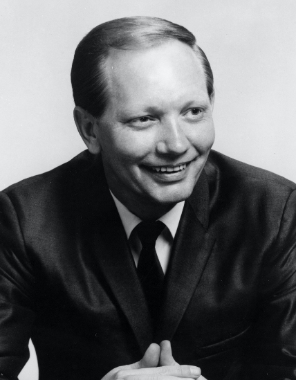

<!doctype html>

<html class="no-js" lang="en">

<head>
  <meta charset="utf-8" />
  <meta http-equiv="x-ua-compatible" content="ie=edge">
  <meta name="viewport" content="width=device-width, initial-scale=1.0">
  <title>GDES1060 – MW-proj1.4</title>
  <link rel="stylesheet" href="css/foundation.css">
  <link rel="stylesheet" href="css/motion-ui.min.css" />
  <link rel="stylesheet" href="css/app.css">
</head>
</html>

<body>

  <!-- Your code goes here -->
<header> 
  <div style="background-color: black ; padding: 10px;">
   <a href="index.html">
  
</a>
</div>
</header>
   <div class="breadcrumb">
        <p><a href="index.html" >Home</a> <a href="featured.html">Featured</a> <a href="fame.html">Fame</a></p>
<main>
  


  <div class="card" style="width: 415px;">
       <div style="background-color: orange ; padding: 5px;">
  <div class="card-divider">
    <h1><b>EDDIE BAYERS</b></h1>
  </div>
  <button class="button" type="button" data-toggle="example-dropdown">More Information</button>
<div class="dropdown-pane" id="example-dropdown" data-dropdown data-auto-focus="true">
   <h4><b>Recording & Touring Musician</b></h4>
   <div class="card-section">
    <p>A top studio drummer of country music’s modern era, Eddie Bayers has played on Nashville recordings since the mid-1970s. Highly respected by his country music peers, Bayers was named the Academy of Country Music’s top drummer fourteen times between 1991 and 2010.</p>
   </div> 
 </div>

</div>


  <div class="card" style="width: 415px;">
       <div style="background-color: orange ; padding: 5px;">
  <div class="card-divider">
    <h1><b>RAY CHARLES </b></h1>
  </div>
  <button class="button" type="button" data-toggle="example-dropdown2">More Information</button>
<div class="dropdown-pane" id="example-dropdown2" data-dropdown data-auto-focus="true">
   <h4><b>Veterans Era Artist </b></h4>
   <div class="card-section">
    <p>An enormously influential in country music. With his landmark 1962 album Modern Sounds in Country and Western Music, the soulful singer and pianist put his own indelible stamp on country songs, broadening the music’s appeal and audience. Charles overcame barriers of disability and race to transform American popular music, becoming one of the most revered and recognized entertainers in the world.</p>
   </div> 
 </div>
  
</div>


 <div class="card" style="width: 415px;">
     <div style="background-color: orange ; padding: 5px;">
  <div class="card-divider">
    <h1><b>THE JUDDS</b></h1>
  </div>
  <button class="button" type="button" data-toggle="example-dropdown3">More Information</button>
<div class="dropdown-pane" id="example-dropdown3" data-dropdown data-auto-focus="true">
   <h4><b>Modern Era Artist</b></h4>
   <div class="card-section">
    <p>The mother daughter duo helped take country back to its roots in the 1980s with lean, tuneful songs influenced by traditional folk music, acoustic blues, and family harmony acts. Between 1984 and 1991, the Judds scored a remarkable twenty Top Ten hits—including fourteen #1s. They also won five Grammys, nine CMA awards, and seven ACM awards.</p>
   </div> 
 </div>

</div>

 <div class="card" style="width: 415px;">
   <div style="background-color: orange ; padding: 5px;">
  <div class="card-divider">
    <h1><b>PETE DRAKE</b></h1>
  </div>
  <button class="button" type="button" data-toggle="example-dropdown4">More Information</button> 
<div class="dropdown-pane" id="example-dropdown4" data-dropdown data-auto-focus="true">
   <h4><b>Recording & Touring Musician</b></h4>
   <div class="card-section">
    <p>Pedal steel guitarist Pete Drake left a lasting mark not only on country music, but also on rock, gospel, and folk music. He moved to Nashville in 1959 and quickly became a first-call session musician, playing on countless country hits. His impact extended to owning a recording studio, founding two independent record labels, and establishing music publishing firms.</p>
   </div> 
 </div>
 
</div>
 
  


<footer>
  <div style="background-color: orange ; padding: 10px;">
<p> Country Music Hall of Fame & Museum
222 Fifth Avenue South
Nashville, Tennessee 37203
615-416-2001
info@countrymusichalloffame.org</p>


</div>
</footer>

</main>


  <script src="js/vendor.js"></script>
  <script src="js/foundation.js"></script>

  <script>
    $(document).foundation();
  </script>

</body>

</html>